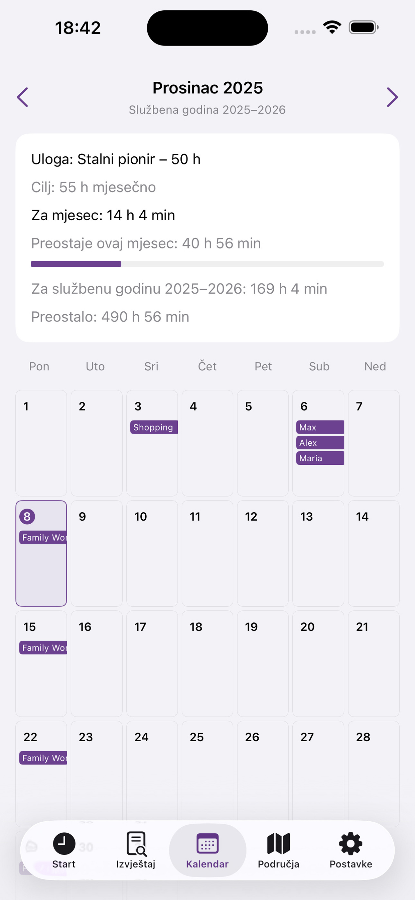
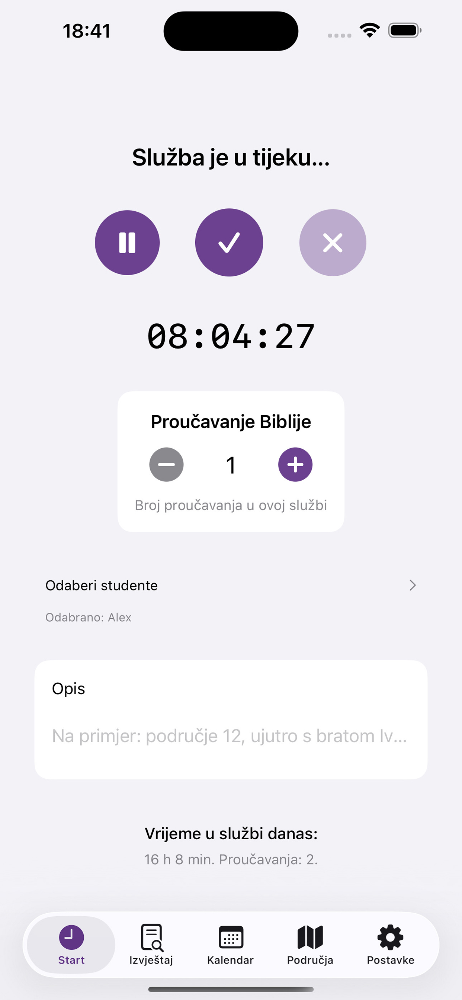
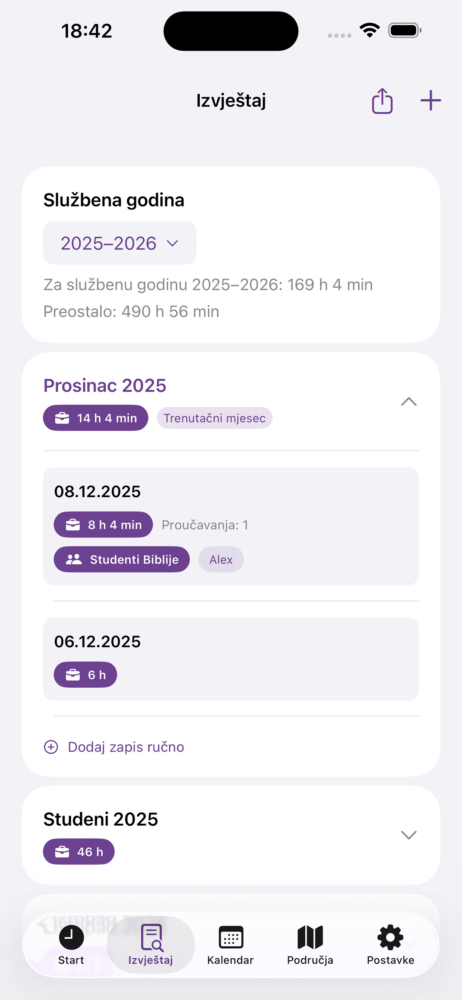
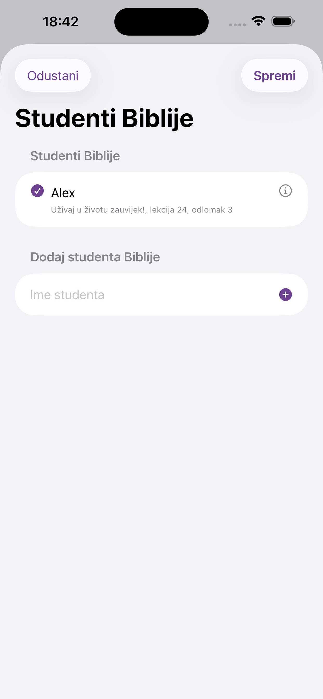
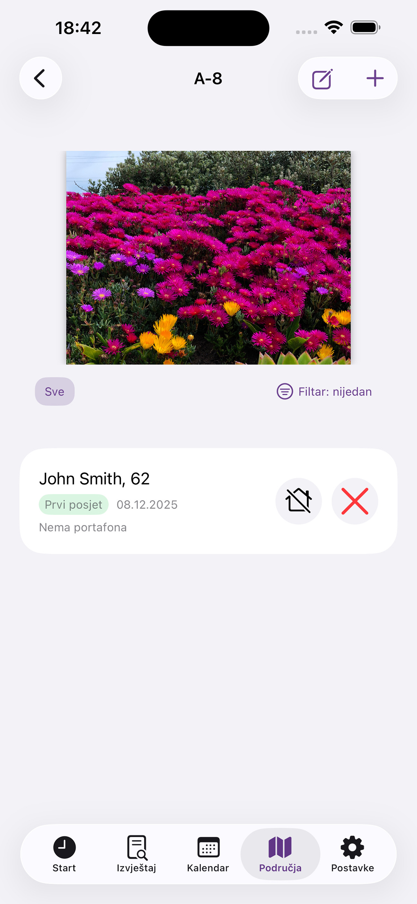
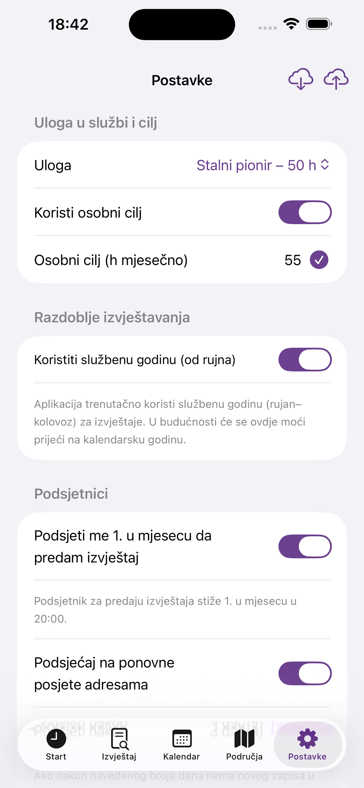
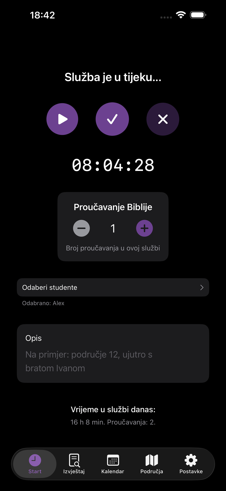
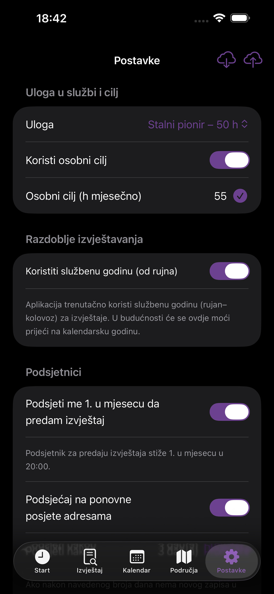

Vaš potpuni suputnik za službu propovijedanja i pionirsku službu
JW Ministry je aplikacija za službu propovijedanja Jehovinih svjedoka na iPhoneu i iPadu: štoperica s Live Activities, evidencija interesenata, izvještaji po službenoj godini, ciljevi sati za pionire i kartice područja.



Istražite svaki zaslon aplikacije JW Ministry
Stvarne snimke zaslona na hrvatskom jeziku — od štoperice za službu i biblijskih tečajeva do kalendara pionira, područja i tamnog OLED načina.







Sve što vam treba za organiziranu službu propovijedanja
Izrađeno za objavitelje, pomoćne, stalne i specijalne pionire.
Pametna štoperica, Widgeti i Dynamic Island
Pokrenite štopericu iz aplikacije, widgeta na početnom zaslonu ili zaključanog zaslona. Aktivno vrijeme uvijek je vidljivo na Dynamic Islandu.
Biblijski tečajevi i napredak u lekcijama
Povežite biblijske tečajeve izravno s unosima u izvještaju. Pratite lekciju svakog interesenta u knjizi „Sretan život – sada i zauvijek!”.
Uloge u službi i osobni ciljevi sati
Podržava Objavitelja, Pomoćnog pionira (15 ili 30 sati), Stalnog pionira (50 sati), Specijalnog pionira (90 / 100 sati) i osobni mjesečni cilj.
Službena godina (rujan–kolovoz) i Kalendar
Planirajte sastanke za službu i obiteljsko proučavanje. Usporedite planirane i stvarne sate te pretvorite planove u izvještaj jednim potezom prsta.
Područja, stambene zgrade i podsjetnici za posjete
Izradite kartice područja s fotografijama, 10 boja i generatorom stanova po ulazima i katovima. Pretražujte po adresi ili imenu.
100% privatnost na uređaju i iCloud sigurnosne kopije
Bez registracije i bez vanjskih poslužitelja. Svi podaci i fotografije područja ostaju lokalno na vašem iPhoneu/iPadu.
Što je novo u verziji 1.8
- Automatski zbroj planiranih sati u mjesecu u Kalendaru i dvostruka traka napretka (Planirano vs. Ostvareno).
- Pretvaranje planiranog termina iz Kalendara izravno u unos Izvještaja jednim potezom prsta.
- Trenutačna pretraga po adresi ili imenu stanara u svim područjima te 10 boja za kartice područja.
- Podrška za nadolazeću službenu godinu (2026–2027) u kartici Izvještaj.
- Potpuna optimizacija za najnoviji iOS i iPadOS te pojačana zaštita sigurnosnih kopija.
Zašto objavitelji i pioniri biraju JW Ministry
Usporedba mogućnosti za izvještaj o službi, raspored pionira i vođenje područja.
| Značajka | Papirnate bilješke | Starije aplikacije | JW Ministry 1.8 |
|---|---|---|---|
| Štoperica uživo na zaključanom zaslonu i Dynamic Islandu | Ne | Ne | Da (Live Activities) |
| Izračun sati pionira (15, 30, 50 h) i službene godine (600 h) | Ručno | Djelomično | Automatski + Osobni cilj |
| Usporedba Plan vs. Stvarno u Kalendaru i potez u Izvještaj | Ne | Ne | Jednim potezom prsta |
| Generator stambenih zgrada + Fotografije karata i 10 boja | Papirnati listići | Samo tekst | Vizualne kartice + Pretraga |
| Podsjetnici za ponovne posjete i predaju izvještaja 1. u mjesecu | Ne | Osnovno | Pametne iOS obavijesti |
| 100% lokalna privatnost i potpuna kopija s fotografijama na iCloud Drive | Lako se izgubi | Greške pri promjeni iPhonea | 100% Offline i sigurno |
| Izvorna podrška za novi iOS, iPad, OLED tamni način i 35+ jezika | — | Ne ažurira se | Moderan SwiftUI dizajn |
Stvoreno za službu propovijedanja i pionirsku službu Jehovinih svjedoka
Kako JW Ministry pomaže objaviteljima i pionirima tijekom cijele službene godine.
Stalni i specijalni pioniri (50, 90 i 100 sati / Službena godina 600 sati)
Jednostavno pratite mjesečni cilj od 50 sati i godišnji cilj od 600 sati od rujna do kolovoza. Postavite osobni cilj (npr. 55 sati) i usporedite planirane sate sa stvarnima u Kalendaru.
- Automatski saldo za 50 h mjesečno i 600 h u službenoj godini
- Osobni mjesečni cilj sati (npr. 55 sati)
- Dvostruka traka: planirani vs. prijavljeni sati
Pomoćni pioniri (15 i 30 sati) i skupštinski objavitelji
Tijekom posebnih akcija ili razdoblja Спомен-svečanosti prebacite se na Pomoćnog pionira (15 ili 30 sati) jednim dodirom. Podsjetnik 1. u mjesecu u 20:00 pomaže vam da na vrijeme predate izvještaj.
- Brzo prebacivanje na cilj od 15 ili 30 sati
- Dijeljenje mjesečnog izvještaja jednim dodirom
- Automatski podsjetnik 1. u mjesecu u 20:00
Područja od kuće do kuće, zgrade i ponovni posjeti
Izradite digitalne kartice područja s fotografijom karte, 10 boja i generatorom stanova. Bilježite „Nema nikoga” i brzo pretražujte po imenu ili adresi.
- Generator stanova po ulazima i katovima
- Fotografije karata, 10 boja i brza pretraga po imenu ili adresi
- Automatske obavijesti za ponovne posjete
Praćenje biblijskih tečajeva i moderna zamjena za ServicePlanner / MyTime
Spremite trenutnu lekciju svakog interesenta u knjizi „Sretan život – sada i zauvijek!”. Izrađeno za iPhone i iPad.
- Praćenje lekcija u knjizi „Sretan život – sada i zauvijek!”
- Widgeti, Dynamic Island i OLED tamni način
- Moderna zamjena za ServicePlanner i MyTime
Iskustva objavitelja i pionira
Što kažu braća i sestre koji svakodnevno koriste JW Ministry u službi.
“Automatski zbroj planiranih sati u Kalendaru usporedno sa stvarnim vremenom uvelike mi olakšava održavanje rasporeda od 50 sati.”
“Štoperica na zaključanom zaslonu i prebacivanje plana iz Kalendara u izvještaj jednim potezom prsta rade izvrsno.”
“Generator zgrada i pretraga po imenu u karticama područja zamijenili su sve moje papirnate bilješke.”
Potpuno prevedeno na više od 35 jezika
Sučelje aplikacije, widgeti i obavijesti automatski prate jezik vašeg iPhonea ili iPada:
Podržite razvoj aplikacije JW Ministry
JW Ministry je potpuno besplatna aplikacija bez oglasa. Ako vam pomaže u službi, možete podržati buduća iOS ažuriranja i godišnju Apple Developer licencu:
Podrška karticom (Cijeli svijet)
Brza donacija putem Boostyja ili Patreona:
Izravna kripto uplata (0% naknade)
Izravno u novčanik programera:
TQQxYhThQGngj887Lvq9TnKtyyYMcUDFNw
UQBNBroTUyMG0YqgiHGXwVKO_rKe5d2y7gXqvICREjBwuKYk
Često postavljana pitanja (FAQ)
Kako JW Ministry nadopunjuje aplikaciju JW Library?
Dok JW Library služi za čitanje Biblije, publikacija i sastanke, JW Ministry je stvoren za evidenciju vaše osobne službe propovijedanja: mjerenje sati, raspored pionira (15, 30, 50 h), kartice područja i biblijske tečajeve.
Gdje se spremaju moji izvještaji i bilješke s područja?
Isključivo lokalno u memoriji vašeg iPhonea ili iPada. Nikakvi podaci ne šalju se na vanjske poslužitelje.
Kako prenijeti podatke na novi iPhone?
U kartici Postavke dodirnite ikonu oblaka gore desno za izvoz potpune kopije na iCloud Drive i vratite je na novom uređaju.
Radi li aplikacija u službi bez interneta?
Da, aplikacija radi 100% offline bez mobilnih podataka ili Wi-Fi mreže.